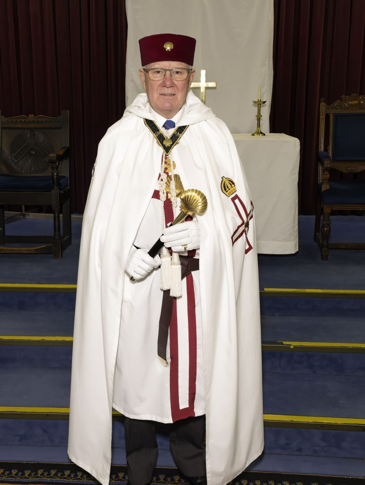
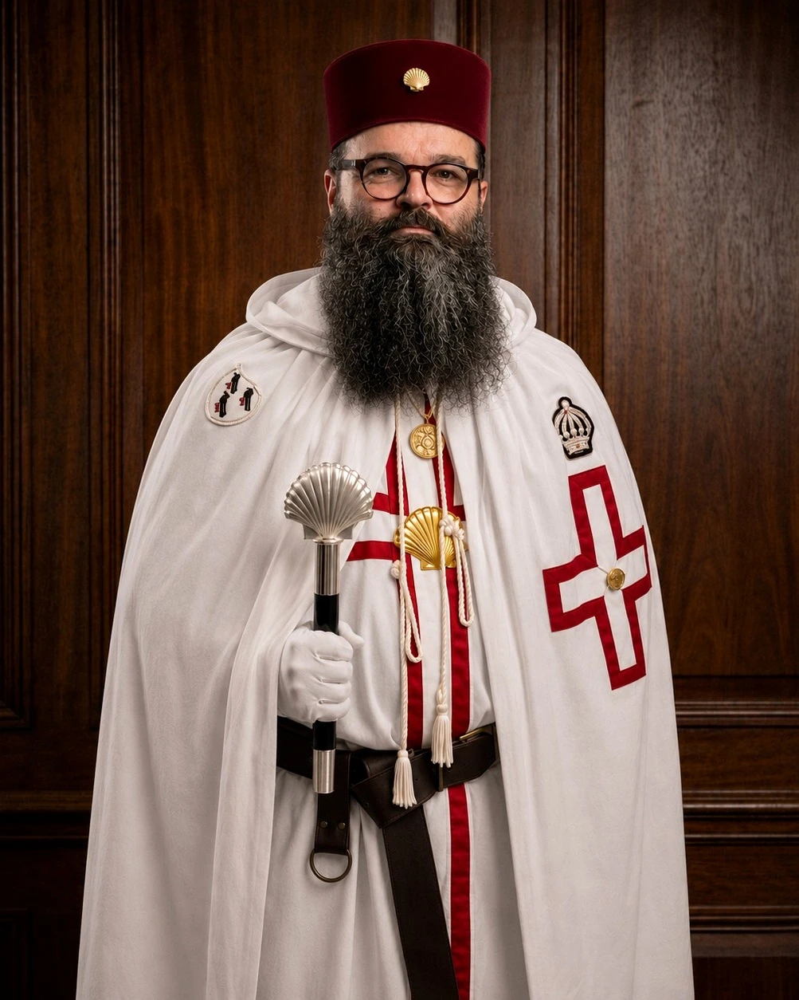

The governance structure of The Commemorative Order of St Thomas of Acon, from its Central Authority to the Province of South America.
The Order is governed by a Central Authority based in England. The Province of South America is part of this international structure, organised into regional Provinces under the direction of the Grand Master.

Sir Philip of Hamilton — Grand Master of The Commemorative Order of St Thomas of Acon.
The Province of South America was constituted in January 2019 with the consecration of Chapels 129, 130 and 132 in Rio de Janeiro. Since then the Province has been led by its Grand Officers, under the supervision of the Grand Master and in coordination with the British Central Authority.

More information: visit the Order’s official international website at thomas-of-acon.org to learn more about the global structure and the activities of the Central Authority.